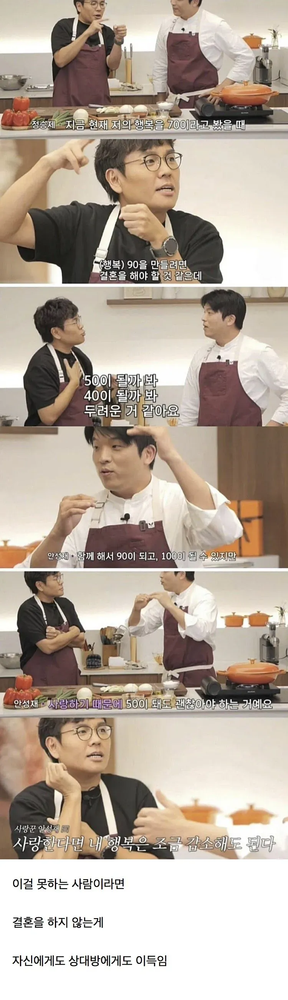

같이사는행복 함께하는 행복 사랑해서 좋다는 행복을 느끼지 못한다면 결국 이혼의길로 가게됩니다
지극히 개인적인 니즈와 행복이 떨어지더라도 함께하는 행복감이 그걸 잊게해주고 더 좋다고 생각이 들어요
그리고 완벽한 사람은 없습니다
결혼상대 찾을떄 오각형에서 한개 두개 세개 나이먹으면서 하나씩 내려놓는다고 점점 뺴가면서 사람찾지마시고
내가 정말 포기못하는 한개를 가져가면서 나머지를 조율해보세요
저게 맞다
다 희생하면서 사는거지
파동의 간섭같네
내가 이게 무섭다. 결혼후 이것저것따져가면서 후회하거나 상처줄거같다.
아버지가 그랬던것처럼
행복을 대단한 거라 생각하면 안 됨. 그럼 실망함. 그냥 서로 장난치로 웃고 낄낄 거릴 수 있다면 좋은 거...
같이할때 행복이 음으로 향할때도 같이 있는게 맞다고 생각할때 하는게 맞지
그런 극단적인건 아니고 인생의 격랑을 말하는거 같은데
그건 40,50이 아니라 10일듯
그정도론 4 50은 안될듯 10 5정도
와 이걸 이렇게 받는 지능이
자기 시간을 포기 할 수 있어야함. 너무나도 당연하던 내 시간이 없어지는게 제일 크게 와닿음.
공감이 안감 난 내 행복이 너무나 소중해..
몇짤이심?
칠순이요
먼 훗날 배우자나 가족 없으면 행복도 마이너스 쌉가능이라던데 그게 존나 무서움.
언젠가 내가 아프고, 외로운 나날에 정신이 망가져버리지는 않을지 두렵지만서도 당장 결혼할 여건은 안돼고, 남녀는 서로 혐오하는게 일상인 분위기속에서 어떻게 앞으로를 살아가야 하나요 라는 자신감 없는 생각만 드네
결혼도 저점이 한없이 낮아서 결혼한사람 1/3은 이혼을 경험함 정답은 없다 이거지~
내가그래서 갔다왔지~
저런 기준이면 결혼 할수 있을거같은데 배우자가 엄청 이뻐야됨
그게 꼭 외모의 이쁨만 해당하지 않음. 어차피 이쁘다는게 여러가지로 주관적인 취향이기도 하고
나는 아직도 세상에서 우리 이프님이 제일 귀엽고 이쁨. 그러니까 특히나 남자는 (자기 눈에) 이뻐야만 하는게 맞지
희생하는데 상대방이 내 희생을 고맙게 생각안하고 당연하게 생각하면 어떡해야됨?
이혼해야지뭐
나혼자만 편하고 잘먹고 잘자는게 최상의 행복이 아니게 세팅된게 인간임. 그런 인간들만 있었으면 진작에 멸종했음.
손해보는게 죽도록 싫고 이득 손해 존나 따지는 성격이면 결혼하면안됨
한녀들이 이거 존나 따져서 불행한거임
결혼은 사랑이 아니라 상대방에 대한 희생이라고 생각함..
서로 희생할 준비가 되지 않았다면 하면 안되는게 맞음